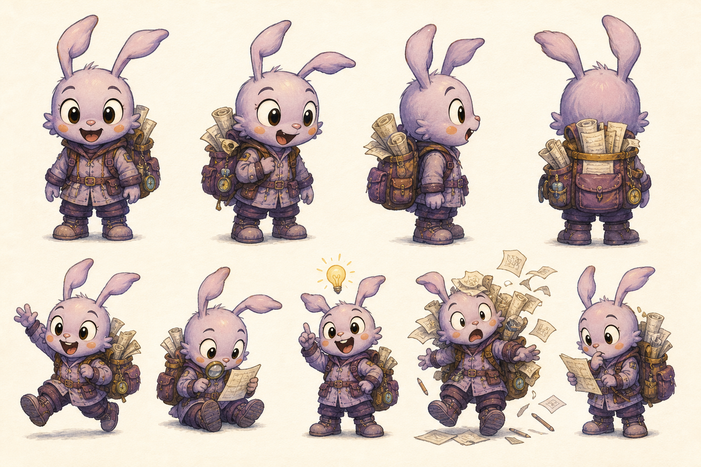
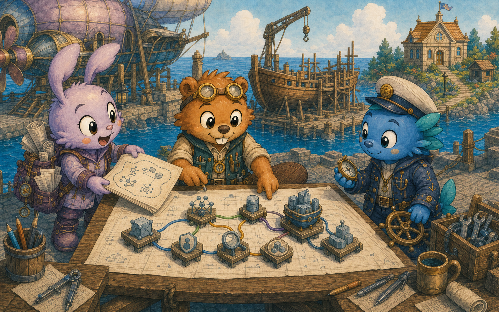
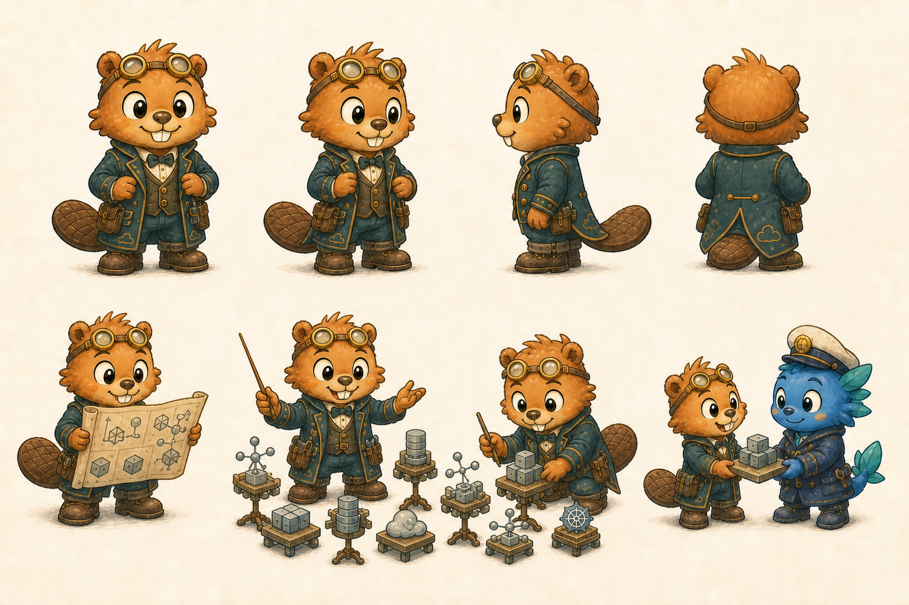
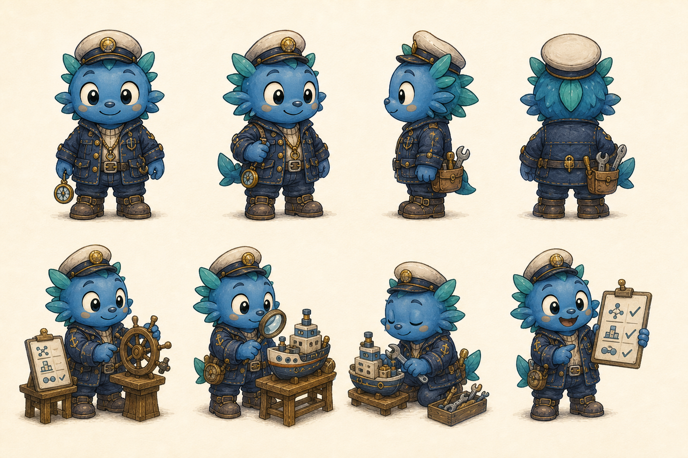
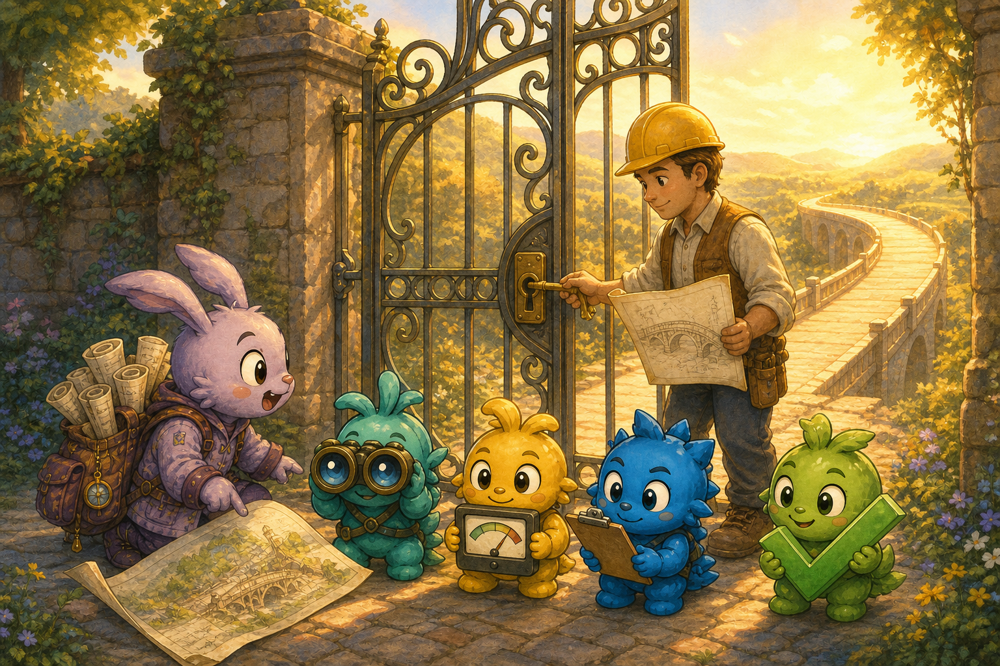
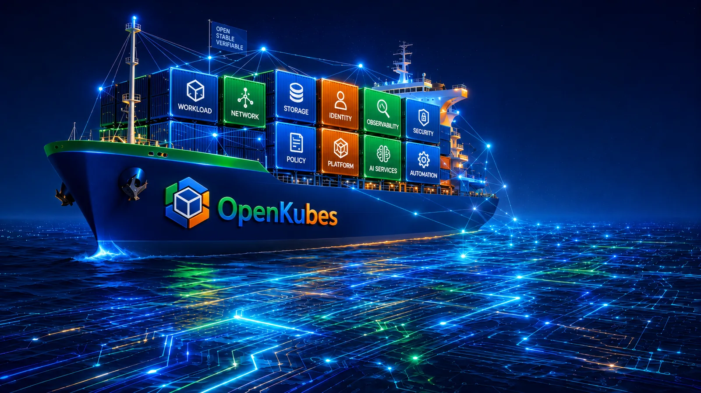
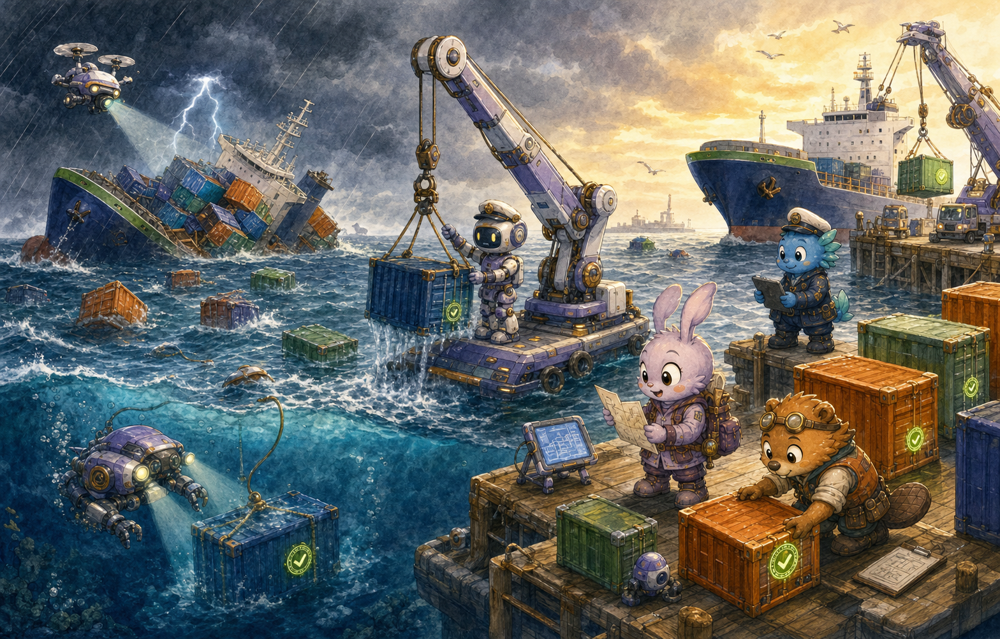
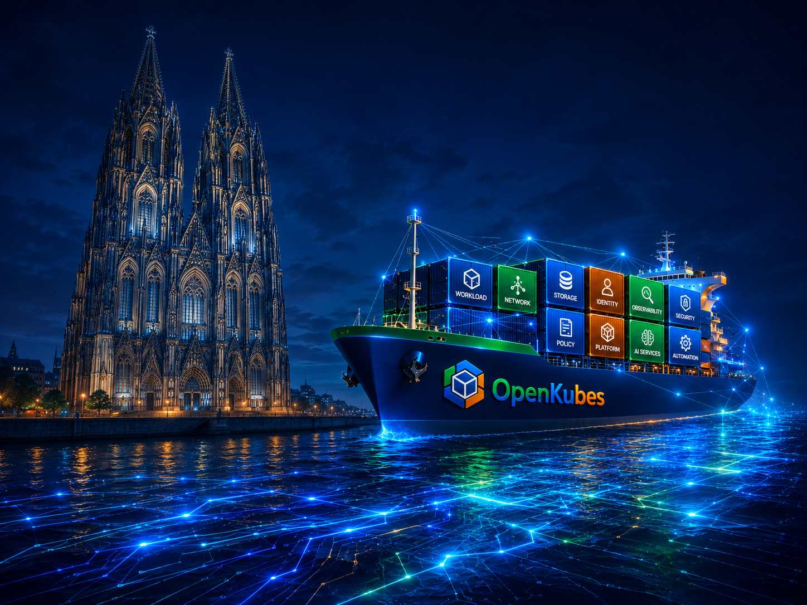

AI AGENT
Aia
liest, sucht, analysiert und entwirft verständliche Vorschläge.
Ich hätte da eine Idee.
ILLUSTRATED GUIDE · CIO & SRE
Aia hilft uns vorauszudenken. Menschen bestimmen den Kurs. Conductor komponiert. Captain hält die Cluster auf Kurs.

DIE EINFACHE ERKLÄRUNG
Aia darf beobachten, Zusammenhänge erklären und Vorschläge entwerfen. Erst ein Mensch gibt genau den geprüften Plan frei. Danach bringen spezialisierte Controller den autorisierten Sollzustand zuverlässig in die Realität.
„Aia schlägt vor. Ein Mensch prüft. Die Plattform führt kontrolliert aus.“
DREI KLARE AUFGABEN
Freundliche Figuren, harte Verantwortungsgrenzen. Keine von ihnen besitzt den Schlüssel.

liest, sucht, analysiert und entwirft verständliche Vorschläge.
Ich hätte da eine Idee.

dirigiert freigegebene Compositions und ihre Ressourcen im Takt der Reconciliation.
Alle folgen derselben Partitur.

baut, skaliert, aktualisiert und ersetzt Kubernetes-Cluster deklarativ.
Ich halte den Cluster auf Kurs.
VERANTWORTUNGSKETTE
Menschen beschreiben das gewünschte Ergebnis.
Aia entwirft eine verständliche Candidate Revision.
Ein Mensch prüft und autorisiert genau diesen Plan.
Conductor ordnet die Plattformbausteine.
Captain reconciliiert Cluster und Maschinen.
Sensoren belegen, ob das Versprechen erfüllt ist.

DIE SICHERHEITSGRENZE
Aia bringt den Plan. Scout, Meter, Check und Proof prüfen Fakten. Der Mensch sieht die wirkliche Änderung und autorisiert genau diese Revision. Policies validieren die Freigabe, ein deterministischer Executor reicht sie ein.
ZWEI SPEZIALISTEN
Keine starre Produktkette, sondern getrennte Verantwortungen mit einer klaren Übergabe.
Compositions bündeln Netzwerk, Identität, Storage, Security, Observability und Cluster-Ressourcen hinter einer verständlichen Plattform-API.
CAPI-Controller reconciliieren Cluster, Control Planes und Machines über unterschiedliche Infrastruktur-Provider hinweg.
Aia beschreibt die Absicht.
Conductor ordnet die Plattform.
Captain baut das Cluster-Schiff.
Gebaut ist nicht bereit.ARCHITEKTUR MIT EHRLICHKEIT
Architektur, Contracts, Governance-Modell, öffentliches ADR und die erste CAPI-MCP-Evaluation sind dokumentiert.
Candidate Contracts, kontrollierter Executor, gehärtete Diagnoseflächen und belastbare Evidenz für alle Akzeptanzkriterien werden implementiert.
Diese Geschichte zeigt das Zielbild. Sie behauptet nicht, dass Aia heute autonome Cluster-Lifecycle-Aktionen ausführt.

SZENE 08
Aus einem geprüften Plan ist eine fahrende Plattform geworden. Menschen bestimmen den Kurs. Controller halten den freigegebenen Zustand stabil.
SZENE 09–11 · RESILIENCE
Robotics, deklarative Rekonstruktion und Evidence arbeiten zusammen – innerhalb eines freigegebenen Recovery-Plans.

Unterwasser- und Flugdrohnen erfassen Lage und Zustand.
Identität, Integrität und Recovery-Berechtigung werden verifiziert.
Autonome Kräne und Roboter transportieren freigegebene Module.
Conductor komponiert, Captain baut – auf einem frischen Schiff.

EPILOG · SZENE 12
Sie braucht ein Fundament, das länger hält als einzelne Technologien. Und sie muss weiterfahren, während Menschen sie verbessern.
Built like a cathedral.